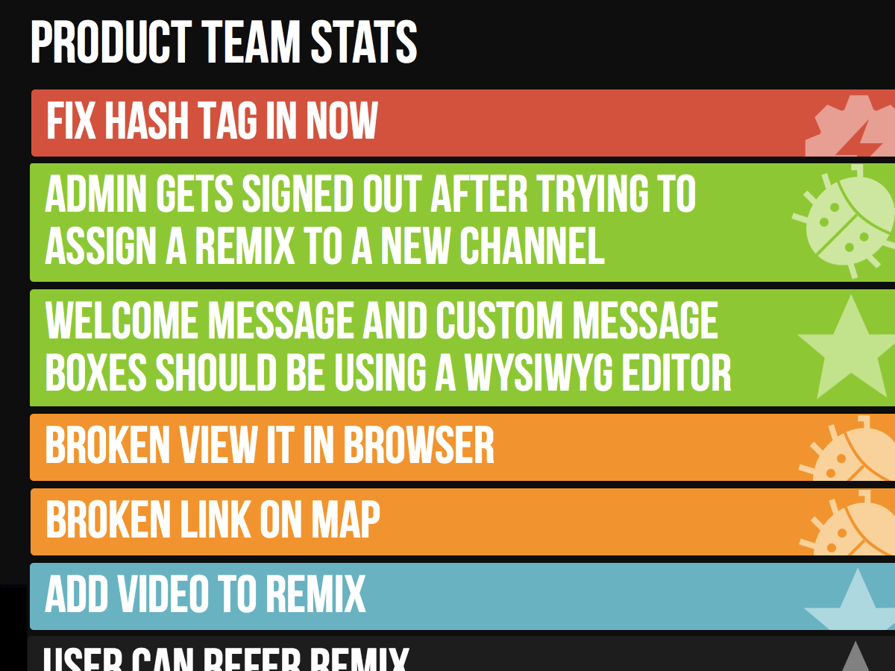

My Adventures in 2012
After a grueling second year here at USC, I've accomplished so much. I was able to keep up my grades in order to keep my full tuition scholarship as well as earn the Merit Research Award. This past semester, I earned a 3.66 GPA and got on the USC Dean's List. I also earned the position of Resident Advisor, which provides full room and board for compensation. As a Resident Advisor, I support and provide my residents with resources to help them succeed at USC. I am a counselor, friend, and occasional babysitter. ^^ Not only do I get to continue this year with new goals and aspirations as a student and RA, but I get to do it without taking out any loans!
I started my celebration this summer by first celebrating Jeff's graduation at USC. I joined him and his family on a fabulously relaxing vacation to Hawaii. We went on an eight day trip to Oahu and Maui. I had plenty of adventures, including: visiting and remembering Pearl Harbor, driving the dangerous Road to Hana, partying at a luau at the Polynesian Cultural Center, and para sailing with Jeff and Marc above the deep blue Pacific Ocean. Unfortunately, I did get strep throat in the middle of our vacation, but that's not surprising for my reputation of sickliness... All in all, it was a wonderful experience to travel, try new food, and spend time with Jeff's family.
After Hawaii, I had a long trip back to the east coast for Elise's graduation. I took a flight from Hawaii to LAX, LAX to North Carolina, North Carolina to New York, and then a road trip straight down to Virginia. Surprisingly, it wasn't as exhausting as expected, because our van was full of music and fun (and mostly lots of pleasant "noise" from Ella whom I missed so much). We spent several days with Elise and we got to go to Hershey Park in Pennsylvania. It was an exciting day of roller coasters, Dip 'n' Dots ice cream, and dancing in the street! At the end of the day, there was a huge storm and I got to drive home in the ridiculously heavy rain. I love driving so much, I would drive in any type of weather given the chance. Back in New Fairfield, I spent a day with my closest friend Renate to visit our old high school and catch up. Then, I went back to Los Angeles for a short time and got to spend my birthday with my Ninang Claire, who showed me new, exciting places in Los Angeles.
Next, it was off to Malaysia! It was great to reconnect with Uncle Rey and Auntie Jeannie, see how much Pierce and Reese have changed, and to finally meet Lara! Staying at Malaysia was truly eye-opening. I learned so much about Malaysia's culture and history, as well as discover epiphanies about my family! Uncle Rey and Auntie Jeannie were very kind and generous to treating me out to several of Malaysia's sights, sounds, and new flavors. Some of my favorite memories include my trip to the Batu Caves and eating Bah Kut Teh. Oh and shopping at all the grand malls, learning how to haggle (I got better...eventually). As for the family, I enjoyed playing with Lara in her little pink tent and I started to teach Pierce and Reese about writing and computer science. And I finally learned the secret to the joke that Pierce and Reese told me when I last saw them in California about 6 years ago.
Knock Knock.
Who's there?
Orange.
Orange who?
Orange and seaweed!
For years I've been telling the joke just like that. I'd laugh to myself, remembering Pierce and Reese, when everyone else would just look at me strangely. All these years I misunderstood them, when apparently the punchline is: "Orange you glad to see me?"
One other discovery I made was about my mother. My mom makes this noise and a face when she doesn't like something, in a humorous way. Say, for example, I used to ask her in high school if I could go to a party and she would reply with a noise that sounds like "roshum boshum boshum" while scrunching her nose and shaking her head. I always thought this was just mom, until my Uncle enlightened me that this came from an old cartoon!! Check out this youtube video at 20 seconds and you'll hear it for yourself. I finally understand! It all makes sense!
But my trip to Malaysia wasn't all fun and games. I had an internship with a company called Says.com. It's a social media website that remixes news for countries including Malaysia, Philippines, Singapore, India, and Australia. It remixes videos, articles, pictures, etc. about a certain news topic so that you can get a 360 view of current news. I worked on the development team, learning how to code in Ruby and Ruby on Rails. At first I worked on features and bugs for the site, but during my last week of my internship I made my own dashboard application called RADAR for the company! It's still a work in progress, but this is what I was able to accomplish in one week. 
This is the product team page that showcases the top ten stories that my team is working on for the site. The icon on the right represents if the story is a bug, feature, or chore. The color represents what state the story is, say started, finished, or deployed. I also have a community and campaign page for the other teams of the company, but I'm working on combining them all to make a comprehensive dashboard. It was really a great experience (despite the 2 hour commute each day) to work with friendly, ambitious people who are driven and passionate about their start-up.
After Malaysia, I returned to Los Angeles and was immediately greeted by three earthquakes. Big surprise! After one day of rest, I moved in to USC to start training for my Resident Advisor position. It's been a long couple of weeks, but I'm so happy to work with a great staff of RA's and my supervisor, who is pretty cool too. But now that training is over, I've been preparing for school to start tomorrow. I've decorated the apartment, bought the books, and I'm all set for a new year. I love it here at USC so much, and I couldn't be happier. Did you know? If USC athletes had competed as a country in the London Olympics, they would have placed 6th in gold medal standings and 11th in overall medals? I'm so proud to be a Trojan.